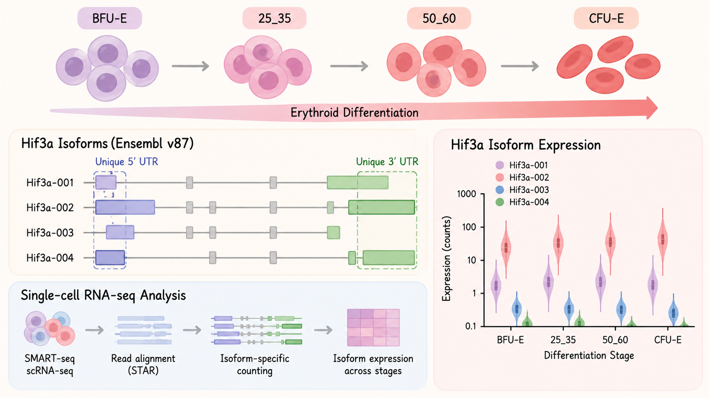
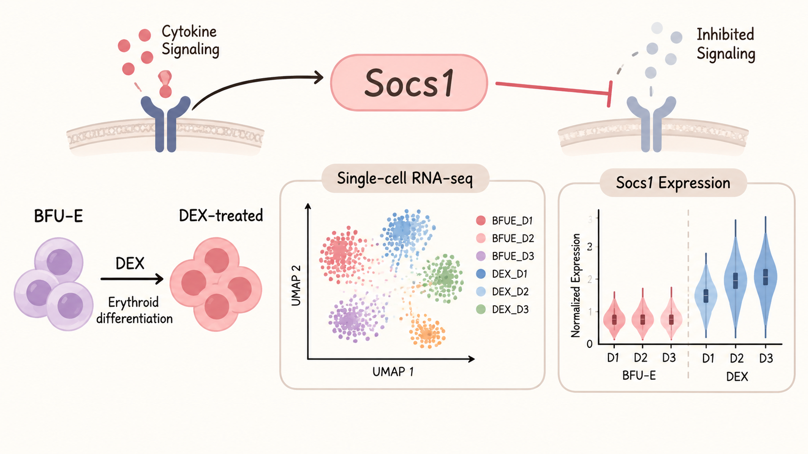
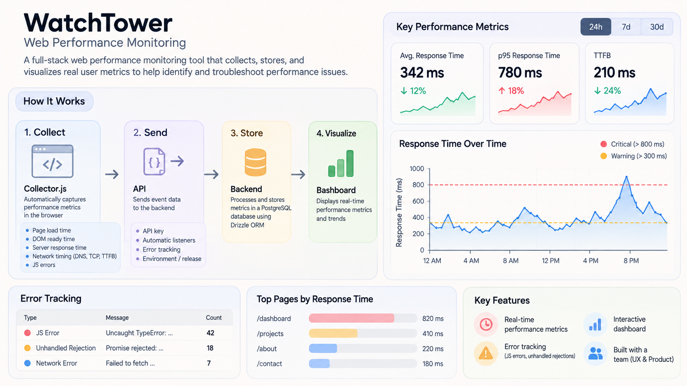

Hif3a Isoform Analysis
Investigating Hif3a transcript isoforms during erythroid differentiation using single-cell RNA-seq.
View Project

Investigating Hif3a transcript isoforms during erythroid differentiation using single-cell RNA-seq.
View Project
Analyzing gene expression and chromatin accessibility in Dex-treated and untreated cells using single-cell RNA-seq and ATAC-seq.
View Project
A team-developed web application for monitoring website performance through an interactive dashboard.
View Project